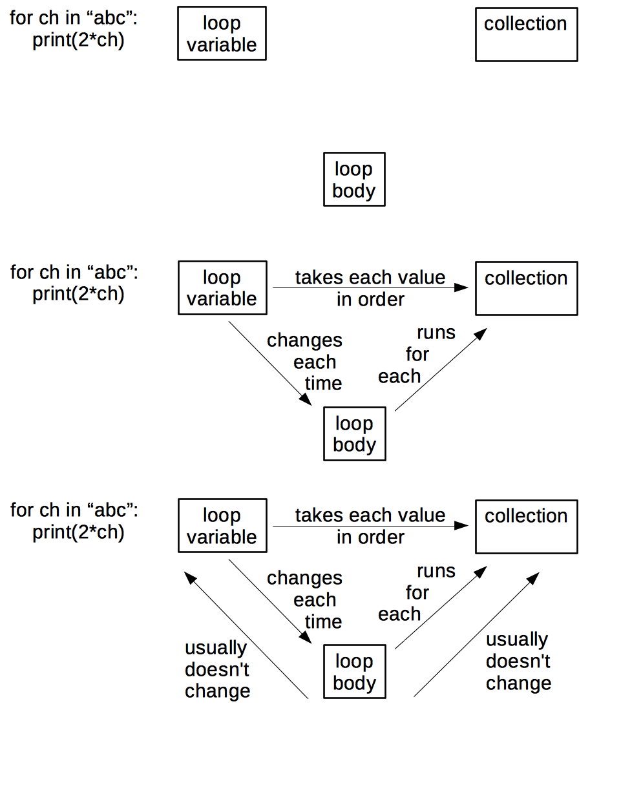

Expertise and Memory
The previous chapter looked at what distinguishes novices from competent practitioners. Here, we will look at expertise: what it is, how people acquire it, and how it can be harmful as well as helpful. We will then see how concept maps can be used to figure out how to turn knowledge into lessons.
To start, what do we mean when we say someone is an expert? The usual response is that they can solve problems much faster than people who are "merely competent", or that they can recognize and deal with the cases where the normal rules don't apply. They also somehow make this look effortless: in most cases, they just know what the right answer is.
What makes someone an expert? The answer isn't just that they know more facts: competent practitioners can memorize a lot of trivia without any noticeable improvement to their performance. Instead, imagine for a moment that we store knowledge as a graph in which facts are nodes and relationships are arcs. (This is emphatically not how our brains work, but it's a useful metaphor.) The key difference between experts and people who are "merely competent" is that experts have many more connections, i.e., their mental models are much more densely connected.
This metaphor helps explain many observed aspects of expert behavior:
Experts can jump directly from a problem to its solution because there actually is a direct link between the two in their mind. Where a competent practitioner would have to reason "A, B, C, D, E", the expert can go from A to E in a single step. We call this intuition, and it isn't always a good thing: when asked to explain their reasoning, experts often can't, because they didn't actually reason their way to the solution–they just recognized it.
Experts are frequently so familiar with their subject that they can no longer imagine what it's like to not see the world that way. As a result, they are often less good at teaching the subject than people with less expertise who still remember what it's like to have to learn the things. This phenomenon is called expert blind spot), and while it can be overcome with training, it's part of why there is no correlation between how good someone is at doing research in an area and how good they are at teaching it [Citation not found].
Densely-connected knowledge graphs are also the basis for experts' fluid representations, i.e., their ability to switch back and forth between different views of a problem [Citation not found]. For example, when trying to solve a problem in mathematics, we might switch between tackling it geometrically and representing it as a set of equations to be solved.
Finally, this metaphor also explains why experts are better at diagnosis than competent practitioners: more linkages between facts makes it easier to reason backward from symptoms to causes. (And this in turn is why asking programmers to debug during job interviews gives a more accurate impression of their ability than asking them to program.)
The J Word
Experts often betray their blind spot by using the word "just" in explanations, as in, "Oh, it's easy, you just fire up a new virtual machine and then you just install these four patches to Ubuntu and then you just re-write your entire program in a pure functional language." As we discuss later in Motivation, the J word (also sometimes called the passive dismissive adjective) should be banned from classrooms, primarily because using it gives learners the very clear signal that the instructor thinks their problem is trivial and that they therefore must be stupid.
The graph model of knowledge explains why helping learners make connections is as important as introducing them to facts. To use another analogy, the more people you know in a group, the more likely you are to remain part of that group. Similarly, the more connections a fact has to other facts, the more likely the fact is to be remembered.
Repetition vs. Deliberate Practice
The idea that ten thousand hours of practice will make someone an expert in some field is widely quoted, but reality is more complex. Doing exactly the same thing over and over again is much more likely to solidify bad habits than perfect performance. What actually works is deliberate practice (also sometimes called reflective practice), which is doing similar but subtly different things, paying attention to what works and what doesn't, and then changing behavior in response to that feedback to get cumulatively better.
A common progression is for people to go through three stages:
They learn how to do something given feedback from others. For example, they might write an essay about what they did on their summer holiday, and get feedback from a teacher telling them how to improve it.
They learn how to give feedback. For example, they might write an essay about character development in The Catcher in the Rye, and get feedback on their critique from a teacher.
They apply what they've learned about feedback to themselves. At some point, they start critiquing their own work in real time (or nearly so) using the critical skills they've built up in steps 1 and
- Doing this is so much faster than waiting for feedback from others that proficiency suddenly starts to take off.
A meta-study conducted in 2014 [Citation not found] found that "…deliberate practice explained 26% of the variance in performance for games, 21% for music, 18% for sports, 4% for education, and less than 1% for professions." One explanation for this variation is that deliberate practice works best when the rules for evaluating success are very stable, but is less effective when there are more factors at play (i.e., when it's harder to connect cause to effect).
Concept Maps
Our tool of choice to represent a knowledge graph (expert or otherwise) is a concept map(GLOSSARY.md#concept-map). A concept map is simply a picture of someone's mental model of a domain: facts are bubbles, and connections are labelled arcs. It is important that they are labelled: saying "X and Y are related" is only helpful if we explain what the relationship is. And yes, one person's fact may be another person's connection, but one of the benefits of concept mapping is that it makes those differences explicit.
Externalizing Cognition
Concept maps are just one way to represent our understanding of a subject. For example, Andrew Abela's decision tree presents a mental model of how to choose the right kind of chart for different kinds of questions and data. Maps, flowcharts, and blueprints can also be useful in some contexts. What each does is externalize cognition), i.e., make thought processes and mental models visible so that they can be compared, contrasted, and combined.
To show what concept maps look like, consider this simple `for loop in Python:
for letter in "abc":
print('*' + letter)
whose output is:
*a
*b
*c
The three key "things" in this loop are shown in the first part of the figure below, but they are only half the story–and arguably, the less important half. The second part shows the relationships between those things. We can go further and add two more relationships that are usually (but not always) true as shown in the third part.

Concept maps can be used in many ways:
Concept maps aid design of a lesson by helping authors figure out what they're trying to teach. Crucially, a concept map separates content from order: in our experience, people rarely wind up teaching things in the order in which they first drew them.
They also aid communication between lesson designers. Instructors with very different ideas of what they're trying to teach are likely to pull their learners in different directions. Drawing and sharing concept maps isn't guaranteed to prevent this, but it certainly helps.
Concept maps also aid communication with learners. While it's possible to give learners a pre-drawn map at the start of a lesson for them to annotate, it's better to draw it piece by piece while teaching to reinforce the ties between what's in the map and what the instructor said. (We will return to this idea when we discuss Mayer's work on multimedia learning in Cognitive Load.
Concept maps are also a useful for assessment: having learners draw concept maps of what they think they just heard shows the instructor what was missed and what was mis-understood. However, reviewing learners' concept maps is too time-consuming for use in class, but very useful in weekly lectures once learners are familiar with the technique. The qualification is necessary because any new way of doing things initially slows people down–if a student is trying to make sense of basic programming, asking them to figure out how to draw their thoughts at the same time is an unfair load. Finally, some instructors are skeptical of whether novices can effectively map their understanding, since introspection and explanation of understanding are generally more advanced skills than understanding itself.
Meetings, Meetings, Meetings
The next time you have a team meeting, give everyone a sheet of paper and have them spend a few minutes drawing a concept map of the project you're all working on–separately. On the count of three, have everyone reveal their concept maps simultaneously. The discussion that follows everyone's realization of how different their mental models of the project's aims and organization are is always interesting…
Seven Plus or Minus Two
The graph model of knowledge is wrong but useful, but another simple model has a sound physical basis. As a rough approximation, human memory can be divided into two distinct layers. The first is called long-term or persistent memory. It is where we store things like our password, our home address, and what the clown did at our eighth birthday party that scared us so much. It is essentially unbounded: barring injury or disease, we will die before it fills up. However, it is also slow to access–too slow to help us handle hungry lions and disgruntled family members.
Evolution has therefore given us a second system called short-term or working memory. It is much faster, but also much smaller: in 1956, Miller estimated that the average adult's working memory could hold 7±2 items for a few seconds before things started to drop out1. This is why phone numbers are typically 7 or 8 digits long: back when phones had dials instead of keypads, that was the longest string of numbers most adults could remember accurately for as long as it took the dial to go around and around. It's also why sports teams tend to have about half a dozen members, or be broken down into smaller groups (such as the forwards and backs in rugby).
Our minds can store larger numbers of facts in short-term memory by creating chunks. For example, most of us will remember a word we read as a single item, rather than as a sequence of letters. Similarly, the pattern made by five spots on cards or dice is remembered as a whole rather than as five separate pieces of information. Chunks allow us to manage larger problems, but can also mislead us if we mis-identify something, i.e., see it as something it isn't. We will discuss this in more detail later.
7±2 is probably the most important number in programming. When someone is trying to write the next line of a program, or understand what's already there, she needs to keep a bunch of arbitrary facts straight in her head: what does this variable represent, what value does it currently hold, etc. If the number of facts grows too large, her mental model of the program comes crashing down (something we have all experienced).
7±2 is also the most important number in teaching. An instructor cannot push information directly into a learner's long-term memory. Instead, whatever she presents is first represented in the learner's short-term memory, and is only transferred to long-term memory after it has been held there and rehearsed. If we present too much information too quickly, the new will displace the old before it has a chance to consolidate in long-term memory.
This is why it's very important to use a technique like concept mapping a lesson before teaching it - an instructor needs to identify just how many pieces of separate information will need to be "stored" in memory as part of the lesson.
Building Concept Maps Together
Concept maps can be used as a classroom discussion exercise. Put learners in small groups (2-4 people each), give each group some sticky notes on which a few key concepts are written, and have them build a concept map on a whiteboard by placing those sticky notes, connecting them with labelled arcs, and adding any other concepts they think they need.
What Are We Doing Again?
Concept maps can also be used to help build a shared understanding of what a project is trying to accomplish. Everyone independently draws a concept map to show what they think the project's goals and constraints are. Those concept maps are then revealed simultaneously. The ensuing discussion can be…vigorous.
Challenges
Concept Mapping
Create a hand drawn concept map for something you would teach in five minutes. (If possible, do it for the same subject that created a multiple choice question for earlier.) Trade with a partner, and critique each other's maps. Do they present concepts or surface detail? Which of the relationships in your partner's map do you consider concepts and vice versa?
Footnotes
1. More recent estimates put the number closer to 4±1, which means ↩
that effective chunking is even more important than first thought.